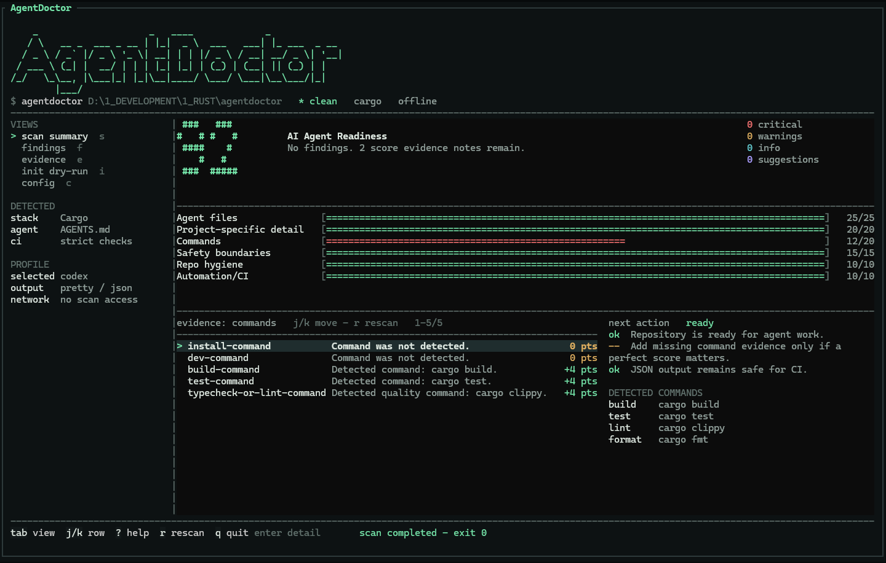

Open-source Rust CLI. Offline by design.
Audit and prepare repositories for AI coding agents before Codex, Claude Code, Cursor, Copilot, Gemini CLI, or generic AGENTS.md tools start working in them.
One command for your platform.
irm https://raw.githubusercontent.com/youssefsz/agentdoctor/main/install.ps1 | iexcurl -fsSL https://raw.githubusercontent.com/youssefsz/agentdoctor/main/install.sh | sh